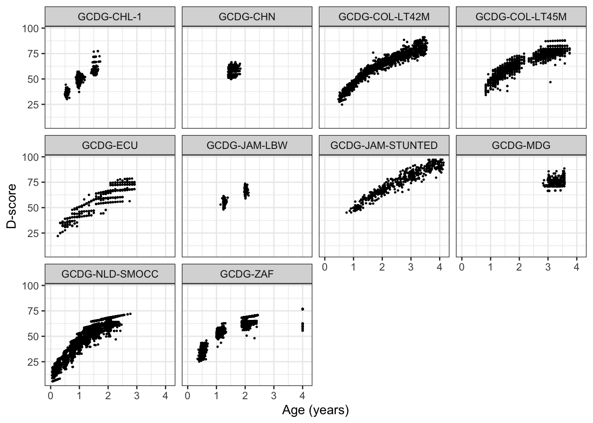

The goal of childdevdata is to support innovation in child development. The package
- Makes anonymous microdata available to the research community;
- Adopts a simple naming schema for developmental milestones;
- Supports multiple measurement instruments;
- Eases joint analyses of the data.
The current version bundles milestone data from ten studies, containing 1,116,061 assessments made on 10,831 unique children during 28,465 visits, covering 21 different instruments.
Installation
You can install the released version of childdevdata from CRAN with
install.packages("childdevdata")You can install the development version of childdevdata from GitHub with
install.packages("remotes")
remotes::install_github("d-score/childdevdata")Example
The following example visualises how the proportion of toddlers that are able to walk increases with age.
library(childdevdata)
library(ggplot2)
# we use the Dutch SMOCC data
data <- with(gcdg_nld_smocc,
data.frame(age = round(agedays/365.25, 4),
walk = ddigmd068))
ggplot(na.omit(data), aes(age, walk)) +
geom_point(cex = 0.5) +
geom_smooth(method = "gam", formula = y ~ s(x, bs = "cs"),
se = FALSE, lwd = 0.5) +
theme_bw()
Overview of available dataset and documentation
The package contains multiple datasets. Obtain the list of datasets by
data(package = "childdevdata")$results[, "Item"]
#> [1] "gcdg_chl_1" "gcdg_chn" "gcdg_col_lt42m" "gcdg_col_lt45m"
#> [5] "gcdg_ecu" "gcdg_jam_lbw" "gcdg_jam_stunted" "gcdg_mdg"
#> [9] "gcdg_nld_smocc" "gcdg_zaf"The documentation of the data can be found by typing into the console:
?gcdg_col_lt42mThe size of the data is
dim(gcdg_col_lt42m)
#> [1] 1311 627The first six rows and first nine columns are
head(gcdg_col_lt42m[, 1:9])
#> # A tibble: 6 × 9
#> ctrycd cohort cohortn subjid agedays sex gagebrth aqicmc010 aqicmc013
#> <chr> <chr> <int> <int> <int> <chr> <int> <int> <int>
#> 1 COL GCDG-COL-LT4… 50 5.00e6 660 Fema… 224 NA NA
#> 2 COL GCDG-COL-LT4… 50 5.00e6 1166 Fema… 280 NA NA
#> 3 COL GCDG-COL-LT4… 50 5.00e6 314 Fema… 273 NA NA
#> 4 COL GCDG-COL-LT4… 50 5.00e6 1239 Fema… 259 NA NA
#> 5 COL GCDG-COL-LT4… 50 5.00e6 679 Fema… 224 NA NA
#> 6 COL GCDG-COL-LT4… 50 5.00e6 1074 Fema… 252 NA NAThe first seven columns are administrative and background variables. Column numbers eight and up hold the milestone scores.
Combining data
Concatenating two or more data is straightforward using dplyr. The following code concatenates all publicly available GCDG datasets.
library(dplyr)
#>
#> Attaching package: 'dplyr'
#> The following objects are masked from 'package:stats':
#>
#> filter, lag
#> The following objects are masked from 'package:base':
#>
#> intersect, setdiff, setequal, union
alldata <- bind_rows(gcdg_chl_1, gcdg_chn, gcdg_col_lt42m, gcdg_col_lt45m, gcdg_ecu,
gcdg_jam_lbw, gcdg_jam_stunted, gcdg_mdg, gcdg_nld_smocc, gcdg_zaf)
dim(alldata)
#> [1] 28465 1306Both the number of rows and the number of columns have increased. Milestones not appearing in a particular data obtain all missing (NA) scores.
The number of records per cohort by sex is
table(alldata$cohort, alldata$sex)
#>
#> Female Male
#> GCDG-CHL-1 970 1169
#> GCDG-CHN 509 481
#> GCDG-COL-LT42M 646 665
#> GCDG-COL-LT45M 651 684
#> GCDG-ECU 337 330
#> GCDG-JAM-LBW 242 201
#> GCDG-JAM-STUNTED 207 270
#> GCDG-MDG 113 92
#> GCDG-NLD-SMOCC 8499 8223
#> GCDG-ZAF 2154 2018Calculating D-score and DAZ
The dscore package calculates the D-score (van Buuren 2014) and the D-score adjusted for age Z-score (DAZ) for all cases:
library(dscore)
alldata$age <- round(alldata$agedays/365.25, 4)
d <- dscore(alldata)
head(d)
#> a n p d sem daz
#> 1 1.024 29 0.690 51.8 0.852 0.947
#> 2 1.509 22 0.955 59.5 1.296 0.556
#> 3 0.975 29 0.724 52.5 0.875 1.484
#> 4 1.016 29 0.759 53.3 0.875 1.432
#> 5 1.016 22 0.682 49.7 0.810 0.396
#> 6 1.517 25 0.840 59.5 1.274 0.516
dim(d)
#> [1] 28465 6We visualise the D-score distribution by age per cohort as
alldata <- bind_cols(alldata, d)
ggplot(alldata, aes(age, d, group = cohort)) +
geom_point(cex = 0.3) +
facet_wrap(~ cohort) +
ylab("D-score") + xlab("Age (years)") +
theme_bw()
#> Warning: Removed 380 rows containing missing values (`geom_point()`).
Why this package?
We all want our children to grow and prosper. While there is no shortage of apps and instruments to track child development, it is often unclear which data went into the construction of these tools. In order to improve measurement and norm setting of child development, we need child-level response data per milestone and age. However, no such public dataset seem to exist. The childdevdata package fills that void.
The package grew out of a project in which we collected milestone data from 16 cohorts. See Weber et al. (2019) and http://d-score.org/dbook2/ for results. Ten cohort owners graciously decided to make their data available for third parties. We are grateful to them.
How to use the data?
Tremendous effort has gone into the collection and harmonisation of the data. You can use the data in this package under the CC BY 4.0 license. Basically, this means that you may share and adapt the data, on the condition that you give appropriate credit and clearly indicate any changes you’ve made. See the license text for details.
We expect that you will properly cite the source data when you use the data in your own product or publication, as follows:
- If you use one dataset, please cite the publication(s) given in the documentation of that dataset.
- If you use two or more datasets, cite the publication(s) for each dataset and cite the
childdevdatapackage.
The citation of the childevdata data package is
@software{stef_van_buuren_2021_4700229,
author = {Stef van Buuren and
Iris Eekhout and
Marta Rubio Codina and
Orazio Attanasio and
Costas Meghir and
Emla Fitzsimons and
Sally Grantham-McGregor and
Maria Caridad Araujo and
Susan Walker and
Susan Chang and
Christine Powell and
Ann Weber and
Lia Fernald and
Paul Verkerk and
Linda Richter and
Betsy Lozoff},
title = {D-score/childdevdata: childdevdata 1.1.0},
month = apr,
year = 2021,
publisher = {Zenodo},
version = {v1.1.0},
doi = {10.5281/zenodo.4700229},
url = {https://doi.org/10.5281/zenodo.4700229}
}Want to contribute?
Do you have similar data and want to help others to advance the field? Please let us know. We hope that the childdevdata package may continue to grow into a valuable resource for developers and researchers worldwide.
Acknowledgement
This study was supported by the Bill & Melinda Gates Foundation. The contents are the sole responsibility of the authors and may not necessarily represent the official views of the Bill & Melinda Gates Foundation or other agencies that may have supported the primary data studies used in the present study.